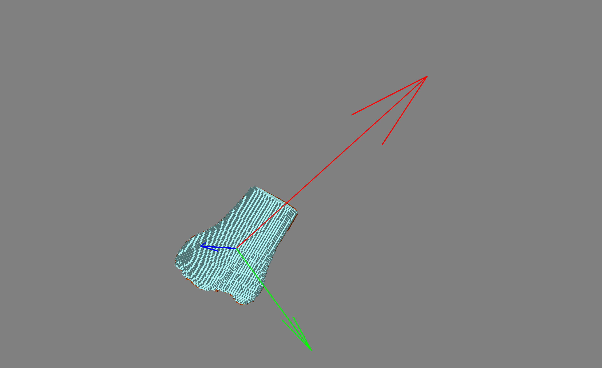

How to use
Set custom filter level (optional)
bone.filter_level = 0.1
Set custom colour for bone (optional)
tibia_f1.default_color = (0.8, 0.3, 0)
1. Load the data that you want to use
tibia_f2 = bone.from_matlab_path(matlab_file='phantom/phantom_tibia_f2.mat')
tibia_f1 = bone.from_matlab_path(matlab_file='phantom/phantom_tibia_f1.mat')
2. Rotate the bone
voxel_rotate(tibia_f1, tibia_f2)
3. Plotting the rotation
tibia_f1.plot()
tibia_f2.plot()
mlab.show()
Plotting with mayavi is very similar to matplotplib where you build a scene and call it with show()
You can plot bones by calling the .plot() method and then mlab.show()

4. Table of Angles
df_angles(tibia_f1, tibia_f2, name='tibia')